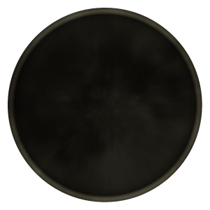
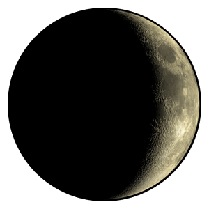

<!DOCTYPE html>
<html>
<head>
    <meta charset="UTF-8" />
    <title>title</title>
    <link rel="stylesheet" href="./!g/moon.css">
</head>
<body>
        <div id="container">
            <div  id="flex"  style="position:relative;">
                <aside id="leftSidebar" style="position:relative;height: 100%;width:300px;color:goldenrod;">
                     <div style="font-family:Stars;font-size:100px;">The Moon</div>
                     <div style="font-family:Stark;font-size:25px;text-align: justify;text-indent: 40px;">     The Moon holds a special place in my heart. It's helped me connect to people, and learn a lot of stuff about myself.
                        <br><br>
                        Sometimes I think about how every night, we can all see the same Moon, and I think thats beautiful.
                    </div>
                </aside>
                <main style="position:relative;height: 100%;width:500px;text-align: center;">
                    <div style="display: inline-block;">
                        
                    </div>
                </main>
                <aside id="rightSidebar" style="position:relative;height: 100%;width:300px;color:goldenrod;">
                <div style="font-family:Stars;font-size:100px;">Howling</div>
                     <div style="font-family:Stark;font-size:25px;text-align: justify;text-indent: 40px;">
                        Mid 2023 I found a place that felt like home to me. A server dedicated to just howling to the new moon. Here I met the owner 
                    </div>
                </aside>
            </div>
        </div>
    <!--<?php 
    chdir('../scripts/');
    $command = 'python3 moonphase.py';
    exec($command, $output, $return_var);

    foreach ($output as $line) {
        if (strpos($line, 'New Moon') !== false) {
            echo "";
        } else  if (strpos($line, 'Waxing Crescent') !== false){
            echo "";
        } else  if (strpos($line, 'First Quarter') !== false){
            echo "";
        } else  if (strpos($line, 'Waxing Gibbous') !== false){
            echo "";
        } else  if (strpos($line, 'Full Moon') !== false){
            echo "";
        } else  if (strpos($line, 'Waning Gibbous') !== false){
            echo "";
        } else  if (strpos($line, 'Last Quarter') !== false){
            echo "";
        } else  if (strpos($line, 'Waning Crescent') !== false){
            echo "";
        }
    }
?> -->
</body>
</html>

